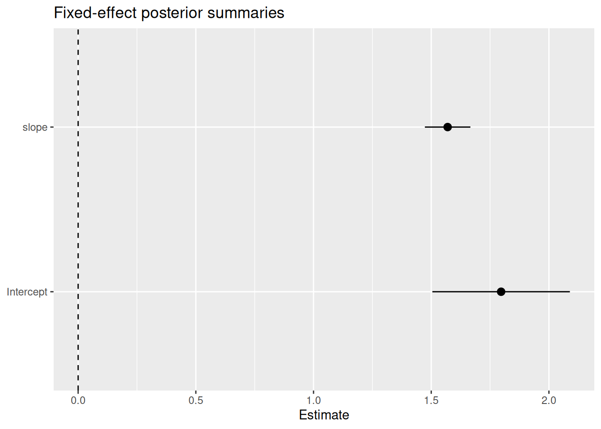
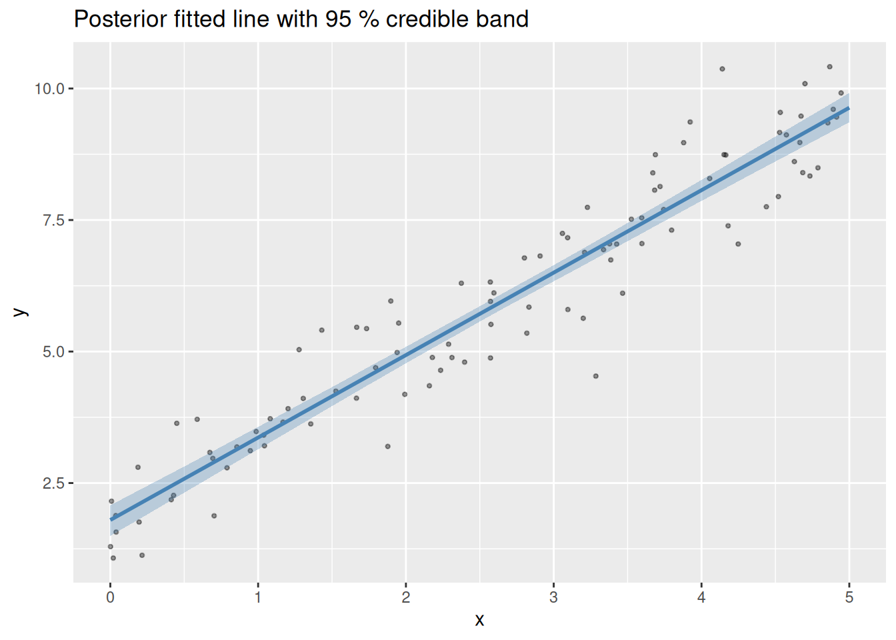

Tidy model output with broom-style tidiers
inlabru authors
Generated on 2026-07-27
Source:vignettes/articles/tidiers.Rmd
tidiers.Rmdinlabru provides broom-style tidiers for
bru model objects through three generics from the generics
package:
-
tidy()— one row per model term (fixed effects or hyperparameters) -
glance()— one row of model-level fit summaries -
augment()— original data extended with posterior fitted values
These make it straightforward to work with inlabru results inside
tidy workflows (dplyr, ggplot2, etc.) without manually unpacking the
bru object.
Note that the column names in the broom framework are standardised in
a way that in most cases are inaccurate in the Bayesian context
(e.g. std.error in the frequentist context is the standard
error of an estimator, but to allow these methods to work in a Bayesian
context, the value used is the posterior standard deviation of the
estimated quantity). However, the tidy output is still useful for quick
summaries and plotting, and the column names are chosen to integrate
with tidy tools that expect them. Only fixed effects and hyperparameters
are initially supported tidy(), not random effects; those
may be added in a future version.
Introduced in version 2.14.1.9005.
Set up
library(INLA)
library(inlabru)
library(ggplot2)
bru_options_set(control.compute = list(dic = TRUE, waic = TRUE))We use a simple simulated Gaussian dataset throughout.
set.seed(42L)
n <- 100
x <- runif(n, 0, 5)
y <- 2 + 1.5 * x + rnorm(n, sd = 0.8)
dat <- data.frame(x = x, y = y)Fit a model
fit <- bru(
y ~ Intercept(1) + slope(x, model = "linear"),
family = "gaussian",
data = dat
)
tidy() — fixed effects
tidy() returns a tibble with one row per fixed-effect
term, including the posterior mean, standard deviation, and 95 %
credible interval.
tidy(fit)
#> # A tibble: 2 × 5
#> term estimate std.error conf.low conf.high
#> <chr> <dbl> <dbl> <dbl> <dbl>
#> 1 Intercept 1.80 0.149 1.50 2.09
#> 2 slope 1.57 0.0492 1.47 1.67The column names follow the broom convention so the output integrates with standard tidy tools. For example, a quick coefficient plot:
tidy(fit) |>
ggplot(aes(x = term, y = estimate, ymin = conf.low, ymax = conf.high)) +
geom_pointrange() +
geom_hline(yintercept = 0, linetype = "dashed") +
coord_flip() +
labs(title = "Fixed-effect posterior summaries", x = NULL, y = "Estimate")
tidy() — hyperparameters
Pass effects = "hyperpar" to extract the precision (or
other hyperparameters) instead.
tidy(fit, effects = "hyperpar")
#> # A tibble: 1 × 5
#> term estimate std.error conf.low conf.high
#> <chr> <dbl> <dbl> <dbl> <dbl>
#> 1 Precision for the Gaussian observations 1.86 0.263 1.38 2.41The Gaussian family has one hyperparameter — the precision of the likelihood. More complex models (e.g. with SPDE random fields) will have additional rows.
glance() — model-level summaries
glance() returns a single-row tibble with the DIC, WAIC,
marginal log-likelihood, the number of observations, and total
wall-clock time.
glance(fit)
#> # A tibble: 1 × 5
#> dic waic marginal_loglik nobs elapsed
#> <dbl> <dbl> <dbl> <int> <dbl>
#> 1 228. 228. -133. 100 1.05This is useful when comparing competing models:
fit_null <- bru(
y ~ Intercept(1),
family = "gaussian",
data = dat
)
library(dplyr)
#>
#> Attaching package: 'dplyr'
#> The following objects are masked from 'package:stats':
#>
#> filter, lag
#> The following objects are masked from 'package:base':
#>
#> intersect, setdiff, setequal, union
bind_rows(
glance(fit_null) |> mutate(model = "intercept only"),
glance(fit) |> mutate(model = "intercept + slope")
) |>
select(model, dic, waic, marginal_loglik, nobs)
#> # A tibble: 2 × 5
#> model dic waic marginal_loglik nobs
#> <chr> <dbl> <dbl> <dbl> <int>
#> 1 intercept only 469. 468. -250. 100
#> 2 intercept + slope 228. 228. -133. 100The model with slope should have a substantially lower
DIC and WAIC.
augment() — fitted values on new data
augment() adds posterior summaries of the linear
predictor to a data frame. Because inlabru prediction expressions are
arbitrary R code, you must supply a pred_formula that names
what to predict.
grid <- data.frame(x = seq(0, 5, length.out = 50))
augmented <- augment(
fit,
data = grid,
pred_formula = ~ Intercept + slope,
n_samples = 500L,
seed = 1L
)
head(augmented)
#> # A tibble: 6 × 5
#> x .fitted .fitted_low .fitted_high .fitted_sd
#> <dbl> <dbl> <dbl> <dbl> <dbl>
#> 1 0 1.80 1.50 2.08 0.151
#> 2 0.102 1.96 1.66 2.23 0.146
#> 3 0.204 2.12 1.83 2.38 0.142
#> 4 0.306 2.28 2.00 2.53 0.138
#> 5 0.408 2.44 2.17 2.68 0.133
#> 6 0.510 2.60 2.33 2.83 0.129The four added columns are .fitted (posterior mean),
.fitted_low and .fitted_high (2.5 % and 97.5 %
quantiles), and .fitted_sd (posterior standard
deviation).
Plot the fitted line with a credible band on top of the raw data:
ggplot() +
geom_point(data = dat, aes(x, y), alpha = 0.4, size = 0.8) +
geom_ribbon(
data = augmented,
aes(x, ymin = .fitted_low, ymax = .fitted_high),
fill = "steelblue", alpha = 0.3
) +
geom_line(
data = augmented,
aes(x, .fitted),
colour = "steelblue", linewidth = 1
) +
labs(
title = "Posterior fitted line with 95 % credible band",
x = "x", y = "y"
)
Naming convention for pred_formula
The latent variables in pred_formula follow inlabru’s
naming rule: the effect of a component named foo is
available as foo, and the corresponding latent variables
(model coefficients, spline coefficients, etc) can be accessed as
foo_latent inside prediction expressions. In classic
frequentist terminology, these two distinct quantities are usually
conflated, making it difficult to know whether one is talking about
beta_x (the latent variable/coefficient), x
(the covariate value), or beta_x * x (the effect of a model
component that multiplies a latent variable with a covariate). In
inlabru expressions, the covariate can be accessed as
.data$x, the effect can be accessed as x or
.effect$x, and the latent variable can be accessed as
x_latent or .latent$x.
Components with model = "linear" (including the implicit
intercept) appear in summary.fixed; components with a
random-effect model (iid, rw1, SPDE, …) appear in
summary.random.